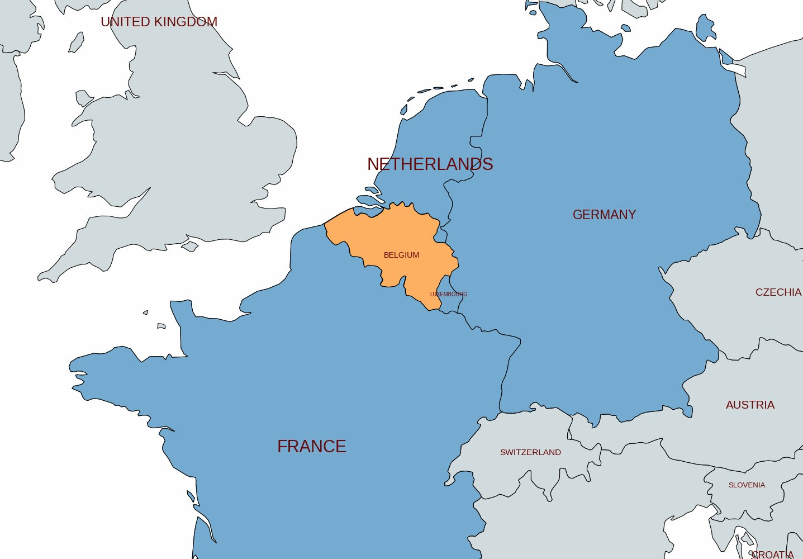
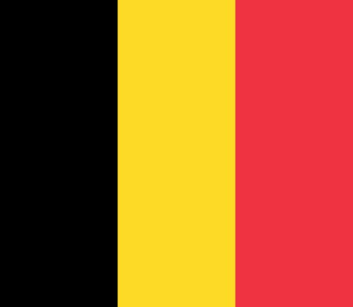
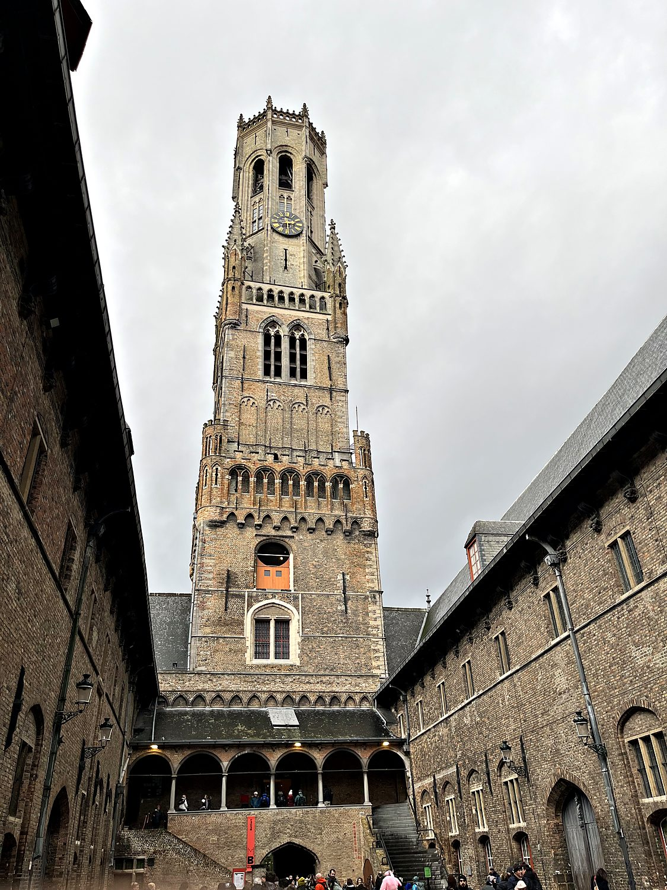
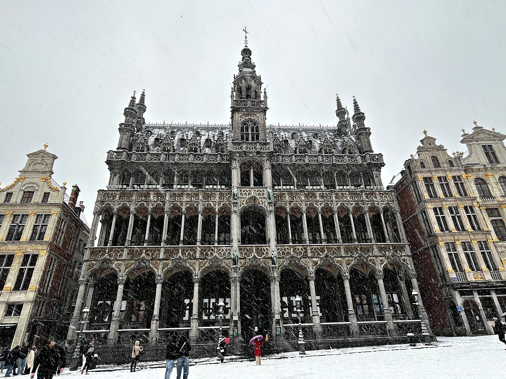
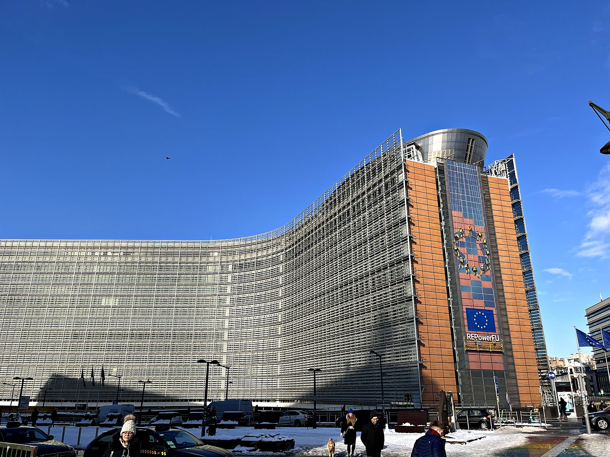

I visited Belgium across two winter trips: Bruges in the last days of December 2023 with my friend Andrew, and Brussels a few weeks later in January 2024 with my friend Alexia. The country rewarded the cold with an almost absurd concentration of medieval beauty, world-class chocolate, and, I feel it must be said, the finest waffle I have ever eaten (the work of a generous vendor who buried mine under an irresponsible quantity of Nutella). I arrived in Brussels in the middle of a proper snowstorm, and walking through the hushed, white-blanketed streets to the Grand-Place turned out to be one of the more magical experiences of the whole journey. Belgium also indulged my sense of the ridiculous: the city's parks were full of snow-covered statues of a certain comic-book cat, and my friend Lukas (who lived there) took me on a tour of Brussels that climaxed, with appropriate solemnity, at the single most important building in Europe – the headquarters of Europatat, the European Potato Trade Association.
The two cities I visited could hardly be more different in character. Bruges, in the Dutch-speaking region of Flanders, is a near-perfectly preserved medieval town. Its web of canals earned it the nickname “Venice of the North.” In the 14th and 15th centuries it was one of the wealthiest cities in Europe, a powerhouse of the cloth trade and a hub of the Hanseatic League, until the waterway linking it to the sea silted up, its commerce collapsed, and the town was essentially frozen in amber for four hundred years. Brussels, the bilingual capital, is a busier and more cosmopolitan place, mixing grand guild houses and Gothic churches with the glass-and-steel institutions of the European Union. Between waffles, Belgian fries, and long conversations about the EU and the Balkans with well-informed friends, it made for a rich and rewarding introduction to the country.

Belgium occupies one of the most fought-over stretches of ground in Europe, a low-lying crossroads between France, Germany, and the sea that has served as the continent's battlefield for centuries. The region was ruled in turn by the Dukes of Burgundy, the Spanish and Austrian Habsburgs, revolutionary France, and finally the Netherlands, before a revolution in 1830 won it independence as the modern Kingdom of Belgium. It is a young country stitched from an old fault line: the north, Flanders, speaks Dutch, while the south, Wallonia, speaks French. The two communities have coexisted in a state of frequently strained but enduring compromise ever since, and bilingual Brussels is caught, fittingly, in the middle.

Belgium's location made it the tragic stage for both World Wars. The trenches of Flanders Fields saw some of the most horrific fighting of the First World War, and the poppies that grew there became the enduring symbol of its remembrance; a generation later, the country was overrun again by Nazi Germany and became the site of the brutal Battle of the Bulge. Perhaps in part because of this history as Europe's perennial buffer state, Belgium threw itself wholeheartedly into the project of European integration after 1945. Today Brussels serves as the de facto capital of the European Union, and is home to the European Commission, a seat of the European Parliament, and the headquarters of NATO. In a way, this small, divided country is the improbable political heart of the entire continent.
Rising nearly 90 meters over the market square of Bruges is the Belfry, the medieval bell tower that has dominated the town's skyline since the 13th century. Belfries like this one were a distinctly Flemish institution, and were symbols of the power and independence of the merchant towns. They housed the town bells, the treasury, and the precious charters of civic liberty. Bruges's belfry sits atop the old cloth hall, a reminder of the textile trade that once made the city fabulously rich. I climbed its several hundred narrow, winding steps to the top, where I was rewarded with a sweeping view over the red rooftops and, just below, a fascinating glimpse into the great mechanical works of the tower's clock and carillon grinding away.

The Grand-Place, the central square of Brussels, is routinely called one of the most beautiful squares in the world, and walking into it through the falling snow, I was inclined to agree. The square is framed on all sides by extraordinary architecture: the soaring Gothic Town Hall with its openwork spire, the ornate King's House pictured here, and a ring of opulent guild halls built by the city's medieval trade corporations, their facades dripping with gilded statues and baroque detail. Most of what stands today was rebuilt after a French bombardment leveled the square in 1695, and the guilds competed to make their halls ever more splendid in the reconstruction.

For all its medieval splendor, Brussels wears another, more modern hat: it is the beating bureaucratic heart of the European Union. The city is home to the European Commission, which is headquartered in the sprawling, cross-shaped Berlaymont building pictured here. My friend Lukas, who knows the institutions intimately, walked me through the complex and taught me a great deal about the Union's history and its constant expansion. There is a certain poetry to the fact that Belgium, a small country repeatedly trampled by Europe's wars and itself divided along linguistic lines, should have become the headquarters of the grand experiment in binding the continent's nations together in peace (and red tape).
